Inhalt Index DeskTop Bronstein

 Geometrie Differentialgeometrie Ebene Kurven Ausgezeichnete Kurvenpunkte und Asymptoten
Geometrie Differentialgeometrie Ebene Kurven Ausgezeichnete Kurvenpunkte und Asymptoten


Eine Asymptote ist eine Gerade, der sich eine Kurve bei deren immer größer werdender Entfernung vom Koordinatenursprung unbegrenzt nähert. Dabei kann die Annäherung von einer Seite her erfolgen (linke Abbildung), oder die Kurve schneidet die Gerade dauernd (rechte Abbildung).
Nicht jede sich unbegrenzt vom Koordinatenursprung entfernende Kurve (unendlicher Kurvenzweig) muß eine Asymptote besitzen. So bezeichnet man z.B. bei unecht gebrochenrationalen Funktionen den ganzrationalen Anteil als asymptotische Näherung.
Zur Bestimmung der Asymptotengleichung sind die Werte zu ermitteln, für die bei 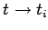 entweder 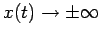 oder 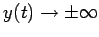 geht.
Folgende Fälle sind zu unterscheiden:
| 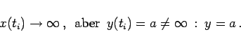 | (3.480a) |
| 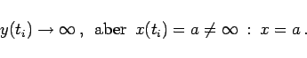 | (3.480b) |
| 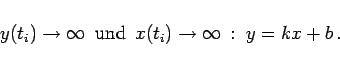 | (3.480c) |
| Beispiel |
|
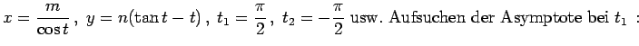 |
Die vertikalen Asymptoten werden als
Unstetigkeitspunkte beim unendlichem Sprung der Funktion f(x) ermittelt, die horizontalen und geneigten Asymptoten als Gerade mit den entsprechenden Grenzwerten:
| 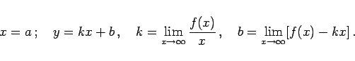 | (3.481) |
Die Funktion F(x,y) ist ein Polynom in x und  . Für horizontale und vertikale Asymptoten einerseits und geneigte Asymptoten andererseits ist je ein anderes Verfahren notwendig.
. Für horizontale und vertikale Asymptoten einerseits und geneigte Asymptoten andererseits ist je ein anderes Verfahren notwendig.
| 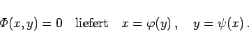 | (3.482) |
Die Werte y1 =a für 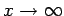 ergeben die horizontalen Asymptoten 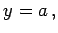 die Werte x1 =b für 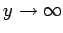 die vertikalen 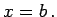
| 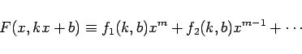 | (3.483) |
Die Parameter k und b ergeben sich, falls sie existieren, aus den Gleichungen
| 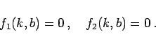 | (3.484) |
| Beispiel |
|
Betrachtung des kartesischen Blattes mit 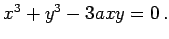 Aus den Gleichungen 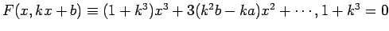 und k2b-ka =0 ergeben sich die Lösungen 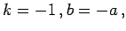 so daß sich die Gleichung der Asymptote zu y =-x-a ergibt. |